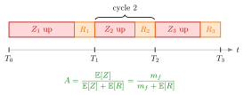

Availability¶
Definition¶
For a server that fails at rate , so with mean time to fail (MTTF) , and whose repairs take on average, the availability is
The second form (6.4.2) follows by dividing numerator and denominator by . Both and must be in the same time unit; is then the dimensionless expected repair time per unit of up time.
Interpretation¶
Availability is the fraction of time the server is up: of every time units in an average up-and-repair cycle, are productive.

The figure shows the up periods and repairs of a server. Each repair ends at a time , and the interval is one cycle: an up period followed by a repair. Taking the up time in a cycle as the reward, the renewal reward theorem says that the long-run fraction of up time equals the expected reward per cycle divided by the expected cycle length, , with (Exercise 6.4.11).
In the queueing model of Server Failure the failure clock runs only while a job is being served, so the up periods are pieces of net service. There is best read as the fraction of the server's occupied time that is spent processing, ; an idle server cannot fail. Failures thus inflate every unit of work by , raising the load to .
depends on and only through the product . Frequent short repairs and rare long repairs can therefore have the same availability but very different service-time variability, so alone does not determine the waiting time. A frequent slip is mixing units, for instance a failure rate per hour with a repair time in minutes (Example 3).
Key Results¶
- , with exactly when .
- Long-run up fraction (Renewal Reward Theorem): for alternating up periods with mean and repairs .
- Effective service and load (Preemptive-Outage Effective Service Time): and .
- Stability: a single server with failures is stable only if , so failures lower the maximal throughput from to (Rate Stability).
- Pairs with the same product give the same , and , but not the same .
Examples¶
1. Availability and load (Exercise 6.4.6). A machine has hours and minutes hour, so and
With net service hour and jobs per hour, hour and . The machine can handle at most jobs per hour, against per hour without failures.
2. Same availability, different machines (TF 6.4.2). Failures at rate per hour with mean repair minutes give . An alternative with failures per hour and -minute repairs gives as well. Both have
so both multiply the mean service time by . The availability cannot tell them apart; the second machine is better because its shorter repairs make the effective service time less variable: with exponential repairs the variance term is hours against hours.
3. A unit mistake. Using per hour from Example 1 with in minutes gives , which would put the load at . The correct value requires both quantities in hours (or both in minutes: per minute and give ).
Prerequisites¶
Related Concepts¶
- Preemptive-Outage Effective Service Time
- Server Utilization
- Rate Stability
- Non-Preemptive Outage
- Sakasegawa's Formula
Sources¶
- Stochastic Operations Research · Week 7
- N. D. van Foreest, Sample Path Analysis and Simulation of Stochastic Systems, Section 6.4
Aliases: server availability, machine availability, fraction of up time, uptime fraction Keywords: A = m_f/(m_f + \mathbb{E}[R]), A = (1+\lambda_f\mathbb{E}[R])^{-1}, MTTF, mean time to fail, m_f, failure rate, \mathbb{E}[S] = \mathbb{E}[S_0]/A, up time and repair time Symbols: lambda, rho
Last updated: 29 October 2026 20:42
AvailabilityPreemptive-Outage Effective Service TimeServer FailureRenewal Reward TheoremServer LoadServer UtilizationRate StabilityNon-Preemptive OutageSakasegawa's Formula